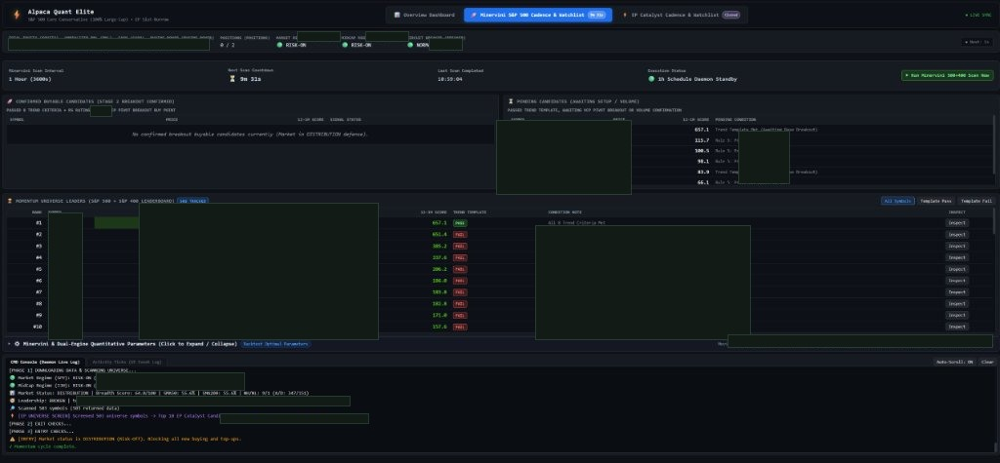
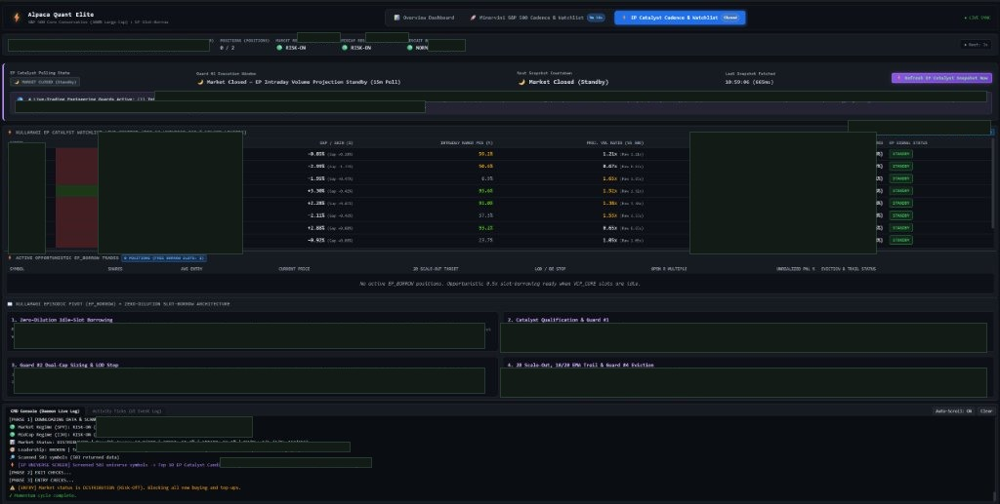

← 回個人作品
Alpaca — 美股事件驅動量化交易與無偏誤回測系統
以 Go (Golang) 與 Wails v2 打造的免外部環境依賴美股自動化交易與無偏誤回測系統，核心解決大規模歷史時序資料的因果隔離（杜絕資料洩漏）、跨時區交易排程狀態機，以及網路中斷時的遠端委託單硬性風控。系統結合 Point-In-Time (PIT) 歷史動態成分股資料庫、雙引擎市場狀態路由與 Alpaca API 伺服器端條件停損，實現從盤前掃描、部位計算到自動下單的端到端（End-to-End）閉環執行。
Go (Golang)
Wails v2
Alpaca API
Point-In-Time (PIT) Hygiene
Walk-Forward Validation
Politis-Romano Bootstrap
Server-Side Hard Stop
< 15 ms
單次 500+ 檔特徵掃描與排序
3.0 s
十年期完整 PIT 事件驅動回測
~17 MB
免外部依賴單一原生執行檔
PATCH Sync
券商伺服器端硬性停損託管
1. 系統架構、跨時區排程與實測效能
- 獨立高併發執行檔與 Wails v2 原生桌面架構 編譯為免外部環境依賴的獨立原生執行檔，結合 Wails v2 實盤桌面監控端（內建 SSE 即時執行日誌與大盤狀態燈號串流）與獨立 CLI 回測引擎，直接對接 Alpaca Markets API 完成盤前特徵掃描、自適應盤中輪詢與自動化委託單派發。
- 高速本地歷史快取、實測效能與回測／實盤 100% 決定性對齊 建構本地端多年期美股歷史行情快取與 GICS 產業中繼資料，單次盤前掃描 500+ 檔成分股特徵與排序僅需 < 15 ms，十年期完整事件驅動回測於 3.0 秒內完成；單一編譯執行檔體積僅約 17 MB，無需 Python 或外部資料庫環境即可部署，並透過穩定確定性排序（sort.SliceStable）確保回測與實盤訊號 100% 一致。
- 美股交易日曆／夏令時間對齊與委託單狀態冪等容錯 針對美股非 24 小時連續交易特性，內建 NYSE 開休市日曆、提前收盤日與美東夏令／冬令時間（EDT/EST）自動對齊狀態機；結合 API 斷線指數退避重試、交易狀態原子持久化與委託單冪等性檢查，確保跨日與網路波動時絕不發生重複下單或漏單。
2. 雙引擎策略框架、PIT 因果隔離與統計壓力驗證
- 雙引擎市場狀態路由與多因子動能／事件驅動模型 整合趨勢樣板過濾與橫斷面動能排序、波動度收斂型態（VCP）結構偵測以及事件驅動跳空動能（Episodic Pivots），由具遲滯防震（Hysteresis）的大盤宏觀狀態機跨大型股核心與中型股衛星雙引擎調度，並透過流動性下限與 GICS 產業集中度閘門篩選標的。
- S&P 500 逐日歷史成分股矩陣（PIT Data Hygiene） 建構 S&P 500 逐日歷史成分股矩陣，於每次再平衡與掃描時嚴格執行因果時間點隔離（Causal Point-In-Time Filtering），確保在實際納入指數日前一律排除未來成分股，從資料底層杜絕倖存者偏誤與前視偏誤。
- Circular 與 Stationary Block Bootstrap（Politis-Romano）暨 Walk-Forward 驗證 結合依市場狀態分層的 Circular Block Bootstrap 蒙地卡羅模擬、具備幾何隨機區塊長度的 Stationary Block Bootstrap（Politis-Romano，完整保留日報酬波動叢聚特性）以及 Walk-Forward 滾動式樣本外參數驗證，嚴謹量化跨牛熊週期的尾端風險與回撤分佈以校準熔斷水位。
- 真實交易摩擦、跳空滑價與隔夜融資計息建模 回測引擎內建美股交易規費、動態成交滑價、跳空穿價停損滑價懲罰以及 Actual/360 隔夜融資複利計息模型，確保模擬淨值曲線貼近真實券商交割環境。
3. 遠端委託單硬性風控託管與部位管理
- Broker Server-Side Hard Stop（PATCH 同步輪詢確認委託單狀態轉移） 主委託單成交當下即同步向 Alpaca 伺服器掛出條件停損單；執行分批減碼或停損上移時，透過原子化 PATCH 請求搭配同步輪詢確認委託單狀態轉移（等待脫離 pending_replace 並釋放 held_for_orders 鎖定），確保即使本機電腦關機、斷網或程式崩潰，停損單仍持續留在券商伺服器端執行硬性保護。
- 波動度自適應倉位、集中度削峰與雙層 HWM 帳戶熔斷 依據個股近期真實波動度與停損距離動態反推下單股數，結合單一持倉集中度自動削峰、產業上限、試單轉金字塔加碼機制，以及經 Bootstrap 尾端風險校準之單日虧損與雙層帳戶淨值高水位（HWM）階梯熔斷器（軟減速去槓桿與硬熔斷平倉鎖機）。
註：本頁僅展示系統工程架構、無偏誤回測方法論與風險控管設計；具體訊號門檻、核心參數與實盤／回測績效數據均予隱藏以保護策略 Alpha。
系統架構（離線 PIT／Bootstrap 驗證與實盤閉環分離）
flowchart LR
subgraph Offline ["Offline PIT & Statistical Validation (離線驗證管線)"]
direction LR
Hist["`Local Multi-Year OHLCV
& Historical S&P 500 / GICS`"] --> PIT["`Causal PIT Engine & Parity Sort
(sort.SliceStable)`"]
PIT --> Val["`Stress Testing
(Walk-Forward · Stationary Block Bootstrap)`"]
end
subgraph Live ["Live Pre-Market & Execution Loop (實盤閉環執行流)"]
direction LR
API["`Alpaca Markets API
(Market Data · NYSE Calendar)`"] --> Filter["`Dual-Engine Filter
(Momentum · VCP · EP · Hysteresis Gate)`"]
Filter --> Exec["`Execution & Risk Engine
(Vol Sizing · HWM Breakers · PATCH Sync)`"]
Exec --> Broker["`Broker Order Dispatch
& Server-Side Hard Stop`"]
end
Val -.->|"Calibrated Risk & Params"| Filter
Broker --> UI["`Wails v2 Native Desktop Dashboard
(Real-Time SSE Stream)`"]
Wails v2 原生桌面監控實況（已脫敏）


